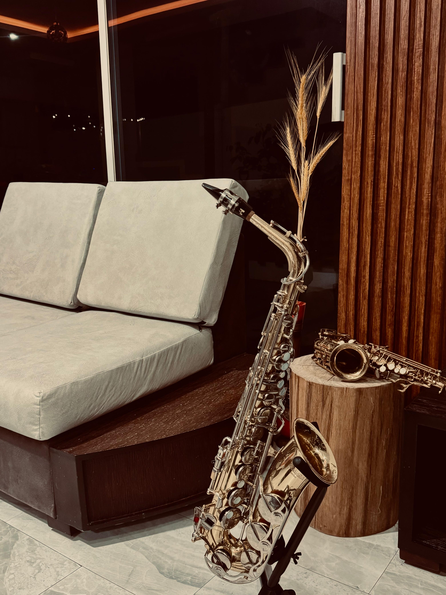

Mi pasión por la música y el saxofón
Publicado el por Diego Quimbiulco

La música es una de mis grandes pasiones y el saxofón se ha convertido en una parte importante de mi vida. A través de este instrumento puedo expresar mis emociones y transmitir sentimientos al público. La música representa una forma de expresión que me motiva a seguir aprendiendo y mejorando cada día.
Mi experiencia con el saxofón
Aprender a tocar saxofón ha sido una experiencia llena de retos y aprendizajes. Con la práctica he desarrollado habilidades musicales, mejorado mi respiración y aprendido a interpretar diferentes melodías. Cada ensayo representa una oportunidad para perfeccionar mi técnica y ganar confianza.
Los géneros musicales que disfruto
Me gusta explorar diferentes estilos musicales, especialmente aquellos que permiten conectar con el público y transmitir alegría. Entre los géneros que más disfruto interpretar se encuentran:
- Música ecuatoriana, como pasillos.
- Salsa y música tropical.
- Cumbias y música popular.
La música puede cambiar el mundo porque puede cambiar a las personas.
- Bono
Más información sobre el aprendizaje musical en Diego Andres